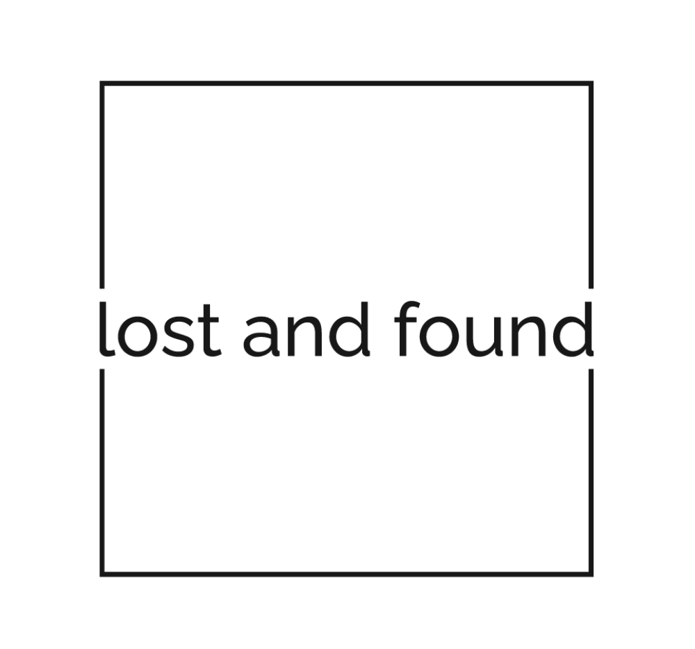

Lost & Found at UVA
Make a Request
Lost Items
Log in
Menu
×
Make a Request
Lost Items
Account
Lost Items
Item 1 (image/details)
Item 2 (image/details)
Item 3 (image/details)
Item 4 (image/details)
Item 5 (image/details)
Item 6 (image/details)
Item 7 (image/details)
Item 8 (image/details)
Item 9 (image/details)